A bitfield manager - bitwisedom in code, on disk and on
the command line. A sheet is a word of 1 to 64 bits -
or wider, to 65,536, held in C as an array of words - and a tree of
symbols, each one row: a name mapped to a value, shown
across the bits it sets, and written out as a C or C++ macro. Groups
collapse like the nodes of a tree, runs of columns collapse to one, and
long names abbreviate to fit. An operation - a shift, a rotation, a byte
swap, arithmetic - is previewed as the bits it moves and the collisions
it makes before it is applied. Sheets open side by side in windows that
dock, in workspaces of their own.
It reads C as well as writing it: a header, or code pasted from one, becomes a sheet, its macros evaluated as C evaluates them - expanded in a define environment, typed, and checked for what C would do wrong.
It is built on djinterp (the model's integers and bit functions come
from re_std, and C is read with its lexer), with its window
drawn by uxoxo over Dear ImGui. Building it is described in BUILD.html.
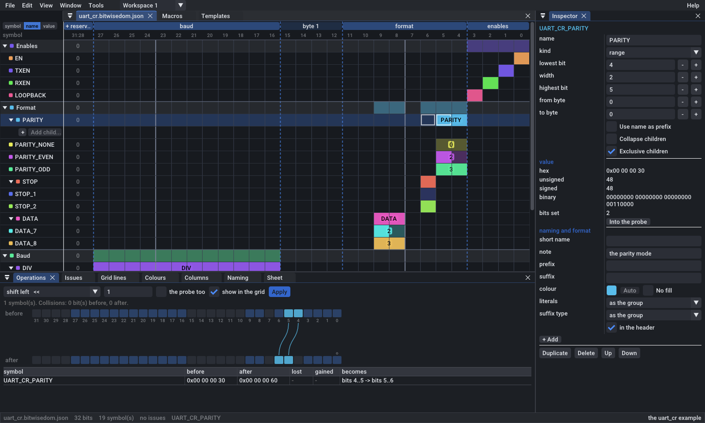
The window is laid out as Visual Studio's is: windows that dock. Each sheet is open in a window of its own, its tab named for its file and marked with a dot while it has unsaved changes; around the sheets are the tool windows - the Inspector down the right; the Macros and Templates pages at the top, as tabs among the sheets; and below them Operations, Issues, Grid lines, Colours, Columns, Naming, Sheet, Display and Console. A tool window shows the sheet in front.
The sheets' tabs run along the top, from the left,
as ImGui's own do. Options > Environment - or
The sheets' tabs in a tab's menu - sets them over one
column instead: over the bits, as Visual Studio's code
tabs sit over the code, the symbols column running up through the tab
row to the window's top; over the symbols column; or
over the value column. Wherever they run, they keep to
its left or its right.
Double-click a sheet's tab to rename its file: the name
is typed over the tab - Enter, or a click away, keeps it; Escape does
not - and .bitwisedom.json is put after a name with no
.json of its own. Nothing on the disk changes: the sheet is
marked changed, and Save writes it under its new name.
The status bar runs along the window's foot: what
the sheet in front is on the left - its file, its width, its symbols,
its issues and the row selected - and at the right end what the window
last said, after a * while the sheet has unsaved changes.
Click the message for the Console:
every action taken so far, the latest first - its name, what it carried,
the sheet it was taken in, and when - an action repeated, a slider
dragged or a name typed, counted as one line many times over. Every
action is a named event with plain values, as a script will one day send
them; the console only lists them.
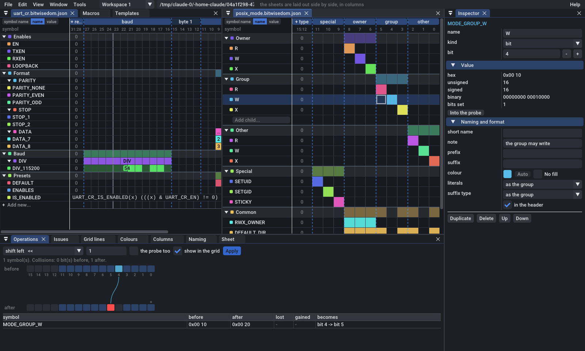
Workspaces are the window's desktops, as Linux has several: each has its own sheets, its own tool windows and its own layout of them, all kept while another is in front. The list after the menus switches between them, or adds one; the Window menu adds, renames, closes and moves a sheet to another, and Ctrl+Alt+Right and Ctrl+Alt+Left step through them. The Window menu also arranges a workspace's sheets: as tabs of one window, side by side in columns, one above another in rows, or in a grid as near square as their number allows.
Zoom is each window's own, as a browser's page's is: Ctrl and the wheel over a window, or Ctrl+=, Ctrl+- and Ctrl+0 for the one in front, from half size to three times; View has them too, and puts every window back at its actual size at once.
The window opens where it was left: its workspaces,
every sheet in them - unsaved changes too - the layout of its windows,
their zoom and the tabs pinned. It keeps them in
session.json beside its settings file, as long as
Open where I left off is on, in the Options.
Tools > Options (Ctrl+,) is every setting in one place, as Visual Studio's are: the window's own on its first pages - the theme and colour scheme, opening where it was left, where the sheets' tabs run, how the symbols tree is shown, how rows are added, what ends a group's rows and how the Add node window opens - and then the sheet's, page by page. The search above the pages finds a setting by its name or what it does.
Settings files keep a set of settings to use again: Export writes the window's settings and the sheet's preferences - how it is drawn and written, never what is in it - to a file, and puts it on the list; a file on the list is applied with a press, to the window and the sheet in front. Import adds one from elsewhere. The list is remembered from one run to the next for as long as each file is where it was; Forget takes one off the list, and Delete deletes the file too. Tools > Import or export settings opens the page.
The grid's symbols column is the tree, by default: its groups open and close there, rows drag there to move - onto a symbol's name to go before it, onto a group's to go to its end - and a selected row's group ends in an Add child... field, with a + before it. The Options' The symbols tree shows it in a window of its own as well, beside the grid, as it once was.
One control adds a row, as the Options' Adding rows
chooses: + Add, whose menu lists what to add - a bit, a
range, a value in a range, a literal, an expression, a macro, or a group
- or a split button, whose face adds the kind it shows
and whose arrow opens the menu, where the kind chosen is added and is
what the face adds from then on. A row is added into the selected group
or range, beside the selected symbol, or at the end of the sheet. The
control is in the inspector of a group or a range, and over the symbols
tree's own window; the grid's + Add new... row, Edit >
Add, Ctrl+B and Ctrl+G add rows
too.
New rows' colour is the user's choice, kept until it is changed: by default none, their set bits drawn plain, in the theme's text, faintly; or each its own, from the palette; or one colour, every new row alike, chosen with the swatch in the add control's menu or in the Options.
The Add node window makes a row of any kind in full before it is added: its kind; the group or range it goes into, first or last there; its name - left empty, the one shown faintly - and its definition, its notes, affixes, colour and format, as the inspector shows a row's; and, as it is made, what it comes to - its macro name, its value every way, the issues it would have, and why it would be refused. Add adds it, a step to undo, and starts the next, the same kind, at the next bit free; Add and close closes the window after. The + before a group's Add child field opens it for that group, as do Edit > Add node..., the add menus and Ctrl+Shift+A, for the selected row's group. The Options' Adding rows page says whether it opens as a tab among the sheets (the default) or as a window of its own; whether a group's rows end in the field and the + (the default), the field alone or the + alone; and whether the field fills its column or, by default, is as wide as what it holds.
The View > Columns submenu shows or hides Symbols, Value and the bit/byte visualizer independently. New sheets hide the Value column, but show Symbols and the visualizer. Drag the Symbols or Value heading onto the other to swap their order; the bit/byte region stays on the right to preserve its pinned/scrolling behavior. The choice is stored in sheet JSON.
The Inspector occupies the whole right-hand height; the tool windows below the sheets sit below the grid, not below the Inspector - until they are docked elsewhere. What it shows of a row is one form, top to bottom: its definition, then the value it comes to every way, then its naming and format, each part under a heading of its own.
Ctrl+S saves the editable
.bitwisedom.json and a companion .h or
.hpp in the same directory, using the document's name - its
tab's - as their shared stem. File > Save As
(Ctrl+Shift+S) chooses the JSON path and macro
extension; File > Open (Ctrl+O)
asks for the file to open, and on Windows offers Explorer's picker. The
Export header command writes the simple header alone.
For now, the simple header contains one #define NAME VALUE
per valid, emitted symbol (symbolic expression names are preserved). The
full formatting of the generated C/C++ header is reserved for later
work.
Each imported C/C++ source or header is a window of its own, beside
its sheet. Use File > Import definition files... to
bring in multiple paths; on Windows, Browse files...
opens a multi-select file picker. The source text is embedded in the
sheet JSON so the definitions remain available when it is reopened.
Preprocessor directives are visible by default; other source and
comments are folded under a small + control, and rendered
muted when expanded. An imported file's window's x removes it from the
sheet, a step to undo; so does the File menu.
Its text is only read for its directives, as a preprocessor would, so
what the preprocessor cannot read is underlined in red
and does nothing - a #define that does not parse, an
#endif with no #if - and what it only
assumed, in amber: an #if resting on a name nothing
defines, read as taken. The mouse on an underlined line says what.
Edit makes the window an editor of the whole text, the
underlines following what is typed, each change a step to undo;
Done makes it a view again.
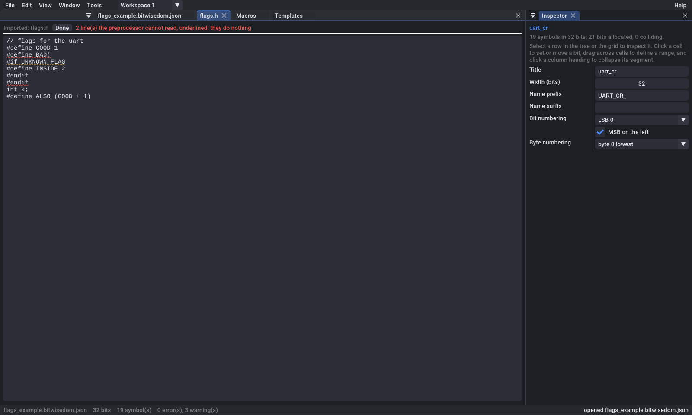
The main menu bar holds File, Edit,
View, Window and
Tools - the theme and colour scheme are View's
Theme submenu - then the list of workspaces, and
Help at the bar's right end: the keyboard shortcuts,
and what bitwis(e)dom is. What the window last said is at the status
bar's right end. Probe and Allocated
rows are hidden on new sheets; they can be toggled from the
+ Add new... row after the last symbol - a +
with its faded label, which opens the popup - or from View. When shown
they sit at the grid's foot, below the symbol rows (below). The same popup offers every
kind of row to add.
Every open group or range that holds rows ends in an Add child... field - in the grid, under the selected row's group; in the symbols tree's own window, under each: type a name and press Enter, and a bit of that name joins the group or range at the lowest bit free there. The field keeps the keyboard, so several can be named one after another; a name that is not a C identifier once its affixes are added, or that is another symbol's, is refused as a rename is, and stays in the field to be put right. Escape clears the field, and a second Escape leaves it.
A sheet has a width (1 to 64 bits, the widest a C integer literal can be; or wider, to 65,536 - below), a name prefix and suffix that every macro name takes, a bit numbering (LSB 0 or MSB 0, for the screen; the generated header always counts from the least significant bit, as C does), a byte numbering for byte ranges and labels, and which side the most significant bit is drawn on.
Rows are groups or symbols. A group
holds rows, carries a prefix and a suffix of its own, and can be
collapsed. A range symbol can also hold other ranges,
bits, expressions and groups. Its children are indented in the tree, and
contained ranges may overlap their parents completely (inclusive
boundaries), while partial overlaps remain flagged. New documents start
with an editable full-width range named root, with no fill,
holding one bit, FLAG, at bit 0 - 0x...01. A
symbol can use No fill in its inspector to remain
transparent instead of receiving an automatic or custom fill; binary
displays use 8-digit groups, octal uses 3, and hex uses 2. Hold
Shift and drag across bit cells to select a rectangle
of rows and bits; ordinary drags continue editing the current row. Each
containing group or range may opt in to prepending its own name to
descendant names. A range or group that holds children can be collapsed.
A group whose bits are exclusive warns when two of its bit or
range symbols claim the same bit; one that is own names only
ignores the affixes of the groups around it. A collapsed group's rows
are neither drawn nor built, in the tree or the grid, so a sheet of
thousands of rows in closed groups is as quick to work in as a small
one; the HRESULT example, 1,424 rows, arrives with its facilities
closed. Expand all and Collapse all,
on the View menu and over the symbols tree's own window, open or close
every group at once, in the tree and the grid together; a group's
right-click menu does the same for the group and the groups within it.
Whether a group is open is kept with the sheet, and is not a step to
undo.
A symbol's value comes from one of six definitions:
| kind | defined by | written, by default, as |
|---|---|---|
| bit | one bit | #define D_EN 0x00000001u |
| range | a lowest bit and a width (or a byte range) | #define D_MODE 0x00000070u |
| value in a range | a number, placed in a range in one of five encodings | #define D_MODE_FAST 0x00000020u |
| literal | a number, positive or negative | #define D_DEFAULT 0x1234u, (-3) |
| expression | other symbols, with C's operators | #define D_RW (D_READ | D_WRITE) |
| macro | parameters and a body, written as given | #define D_IS_SET(x) (((x) & D_EN) != 0) |
Names are built from affixes: the sheet's prefix,
each enclosing group's, outermost first, then the row's own; the
suffixes close in reverse order. UART_CR_ +
PARITY gives UART_CR_PARITY. A name the result
makes invalid in C, or reserved to the implementation
(_Capital, double__underscore), is
reported.
Literals are written in a radix - hex, decimal,
octal, binary, or shifts ((1u << 3),
(0x7u << 4)) - with an integer suffix
(u, ul, ull, or none), set for
the sheet and overridden by any group or row.
A value in a range is a number in one of five encodings, each with its range shown beside it:
| encoding | in 4 bits, -3 is | holds |
|---|---|---|
| unsigned | (does not fit) | 0..15 |
| two's complement | 1101 |
-8..7 |
| ones' complement | 1100 |
-7..7 |
| sign-magnitude | 1011 |
-7..7 |
| offset binary (bias 8) | 0101 |
-8..7 |
A number that does not fit is a warning, not an error: it still has
bits - the ones it wraps to - and they are shown. A literal may be
negative, and is then written as the number it is:
#define D_ONES (-1).
C's integer operators at C's precedence - ~ - + !,
* / %, + -, << >>,
&, ^, | - over literals in
any base C has, the names of other symbols (local or full), parentheses,
and BIT(n), MASK(w) and
GENMASK(high, low). Arithmetic is unsigned and 64 bits
wide. An expression keeps its form in the header, every name replaced by
its macro name; a cycle is reported as the chain it is
(cycle: LA -> LB -> LA). The expression editor
accepts multiline input and C backslash-newline continuations, so
D_ERR_ARRAY_INDEX_OOB may be defined as
D_CODE_ARRAY_FIELD | (D_CODE_ARRAY_IDX_LO | D_CODE_ARRAY_IDX_HI).
Expression evaluation uses 64-bit integer arithmetic, even for wider
sheets.
A sheet may be wider than any C integer - a configuration space, a
CPU's feature bits, a bitmap of hundreds of flags - up to 65,536 bits.
Its values are sets of bits as wide as the sheet; the grid, the
operations, the probe and the files work on them as they do on a narrow
sheet's, and the value column names a set by its runs
(bits 0..15, bits 3, 70 and 128..131). Its
expressions are taken over sets of bits: the bitwise operators,
+, - and negation within the sheet's width,
literals of any width, and BIT(n) past bit 63; a product or
a shift needs one side an integer, and a quotient two.
No C integer holds such a sheet, so its header keeps it in an
array of words - 32 bits by default, or 8, 16 or 64
(the Macros page's array words) - lowest first, bit n
being bit n % 32 of word n / 32. The header begins
with what works on such an array, named with the sheet's prefix:
_WORD_BITS and _WORDS, and
_WORD(n), _MASK(n), _TEST(a, n),
_SET(a, n) and _CLEAR(a, n) for a bit by its
number. Then each symbol is what names a place in the array:
| kind | in a wide sheet's header |
|---|---|
| bit, range | its place: the number of its (lowest) bit,
#define D_CMD_IO 32 |
| value in a range | the bits its field holds, as its range's _GET reads
them: two's complement -1 in 8 bits is 0xFFu |
| literal | the number, while an integer holds it; past bit 63, an array's initializer |
| expression | an array's initializer,
{ 0x00000000u, 0x00000007u, ... } |
A wide sheet has templates of its own, on the
Templates page in place of a narrow sheet's: a range's
_WIDTH, its _WORD and the _SHIFT
and _MASK of its bits there, and _GET(a) and
_SET(a, v), which read and write the range in an array -
word by word, where it crosses from one word to the next; a bit's
_WORD, _MASK and _IS_SET(a), and
a value's _IS(a), to switch on. A range wider than an
integer has no _GET or _SET, and the notes say
so. In C++'s constants form, places are ints, values as
wide as their fields, and sets arrays of the words' fixed-width type:
inline constexpr std::uint32_t D_ENABLE[D_WORDS] = { ... };.
The pci_config_header example is one: a PCI function's
64 bytes of configuration header, sixteen 32-bit registers, each field
and bit at its byte offset times eight - linux/pci_regs.h's
offsets and masks, which the tests compare it with on Linux.
x86_cpuid, on the Large shelf, is another: ten of CPUID's
feature registers end to end, so word n of its array is the
nth register as CPUID returns it, and
CPUID_TEST(regs, CPUID_AVX2) asks the processor's answer
whether it has AVX2; x86-64's microarchitecture levels are expressions
over the flags, and so arrays.
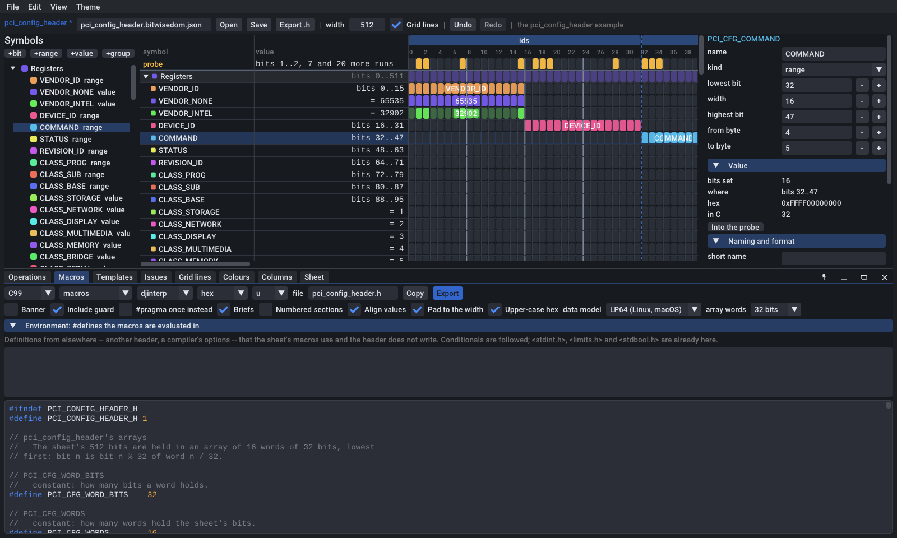
Each row is a symbol; each column a bit. A cell is filled where the row's value has the bit set. A range's or a value's field is tinted underneath, so a value's zeros still show where it lives; a range's name, or a value's number, runs across its span. A group's row shows the union of everything in it.
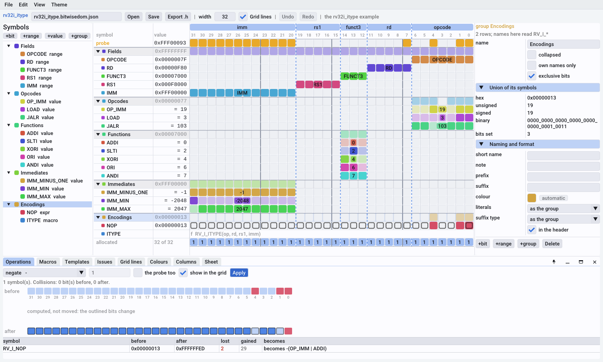
Clicking a name selects its row (Ctrl adds, Shift extends); clicking a group's arrow opens or closes it. Clicking a cell edits the row's bit by its kind: a literal flips the bit, a bit moves to it, a value flips it within its field, and a range stretches to take it in. Dragging across a row's cells sets a range exactly, or paints a literal's bits. Rows can be dragged within the tree to move them.
The grid has a cursor, as a spreadsheet has an active cell, outlined in the accent: a click puts it where it lands, and while the sheet's window is in front the grid takes Excel's keys. The arrows move it a cell; Shift with an arrow extends the range from it - the cursor stays where it is - and the range is the selection: its rows selected, its bits a block of cells, as a Shift+drag selects them, the cursor's cell left plain inside it. Ctrl with an arrow goes to the edge of what the row or column holds - the end of a run of set bits, or the next bit set, or the end - and Ctrl+Shift extends there. A row's name and value always hold something; a group's row holds every bit its rows do.
The symbols and value columns are the grid's frozen panes: Home goes to the row's first bit, Ctrl+Home to the first row's, and Ctrl+End to the last cell anything is in; Shift extends to them. End is End mode, which the status bar shows: then an arrow goes as Ctrl's does, Home as Ctrl+End, and Enter to the row's last cell with anything in it. Page Up and Page Down move a screen of rows, the view with them, Alt with them a screen of columns, and Ctrl with them the sheet before or after in the tab row.
Enter moves down and Tab right, Shift+Enter and Shift+Tab back; inside a range of more than one cell, round and round it, the range kept; and Enter after a run of Tabs goes down to the column the run began in. Shift+Space selects the range's rows whole, Ctrl+Space its columns, Ctrl+A everything; Shift+Backspace leaves the cursor's cell alone selected, Ctrl+Backspace scrolls back to it, and Ctrl+. moves it to the range's next corner, clockwise. F8 is Extend mode, in which the arrows extend as with Shift; Esc ends it, and End mode. F2 renames the cursor's row in place, and Space flips the cursor's bit as a click does - the probe's too. A selection made elsewhere, in the tree, takes the cursor with it; the status bar says which bit it is on.

The probe is a scratch value: click its cells or type a value, and the operations can act on it too. The usage row counts, for each bit, how many bit and range symbols claim it - red where two in an exclusive group do.
Both are pinned at the bottom of the grid by default - at its foot, while the rows above leave room - and either may instead be pinned at the top, or put among the rows: drag one by its name, as a row is dragged, onto a group's or a range's name to go to the end of its rows, onto a symbol's to go just before it, onto another of them to go before it, placed as it is, or into the room below the rows to be pinned at the bottom again. A usage row in a group counts the group's rows, as a subtotal does: allocated in Enables counts Enables' bits alone. A right-click on one pins it, adds another of its kind beside it - every probe row shows the one probe - or removes it; the last of a kind is hidden instead, and keeps its place for when it is shown again. Where each is is the sheet's, saved with it, and every move a step to undo.
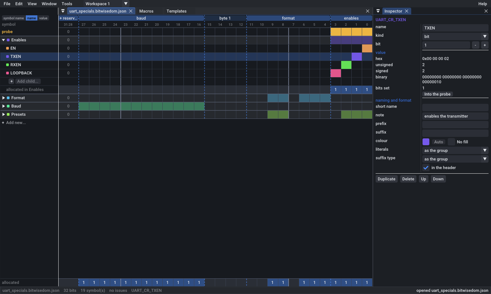
The grid and the tree show each group's rows in the sheet's own order, or sorted: by symbol name, name, short name, value, lowest bit, width, kind or note, either way. Groups come first among their siblings, sorted by name where the key is a name; a row the key says nothing of - a macro with no value, sorted by value - comes after those it does, whichever way; and rows the key cannot tell apart keep the sheet's order. The menu is on a right-click on the symbols column's heading, on the buttons over it, on a row and on the sheet, and on View > Columns > Sort rows by; the heading shows the key beside an arrow, up for first to last. Make it the sheet's own order puts the rows in the sheet in the order they are shown - the header follows the sheet's order, which sorting alone leaves be. The sort is the sheet's, saved with it, and each choice a step to undo.
The grid shows digits in its cells, a range's name - or a value's number - across its cells, and each row's colour, or not, as View > Grid says for the whole grid. Display rules show or hide each of the three in a part of it: a row; a group or a range, and every row in it; a run of bits, in every row; or a block of both, selected with Shift and a drag across the cells. A right-click offers them - on a row, Show in this row (or this group, or the rows selected) and Show in the block selected; on a segment's band, Show in these bits - each part checked where the region shows it, and pressed to show or hide it there; ... here only shows it there and nowhere else; As the rest of the grid takes the region's own rules back. A cell whose colour is hidden is drawn as a row with no fill is: its set bits plain. A range's name is written where names are shown over at least half of it.
The Display window lists every rule - its rows, its bits, and each part as the grid has it, shown or hidden - the last rule over a cell winning; a rule is changed or removed there, and Clear every rule gives every cell back to the grid. The rules are the sheet's, saved with it; a rule whose rows are all deleted goes with them.
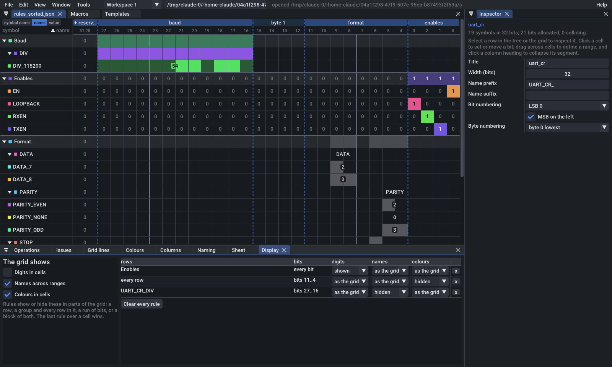
Six kinds, each with its own switch, thickness, colour and style (solid, dashed or dotted), and a master switch on G:
The lines stop where the rows do, above the add row, and begin again at the rows pinned at the grid's foot; Lines past the last row runs them down the room between as well.
Cell width and height, the gap between cells and their rounding are on the same page, with Proportional cells - on by default, and on the View menu too - which makes every row as tall as its share of a bit's cell's width: Row height, of cell width, four fifths by default, 1.0 for square. The cells widen to fill the grid, and the rows grow with them, up to the widest a cell may be (56 pixels), past which the room is left. A cell width set by hand - its slider, or a ruler boundary dragged - is the width the cells take: the room to spare then goes to nothing, and a double-click on a boundary gives the cells back to the grid's width. The rows stop at the shortest a line of digits fits in, however narrow the cells. The cell height is unused while cells are proportional, and the gap and the rounding while cells are not drawn as boxes: each waits, disabled, until it would do something.
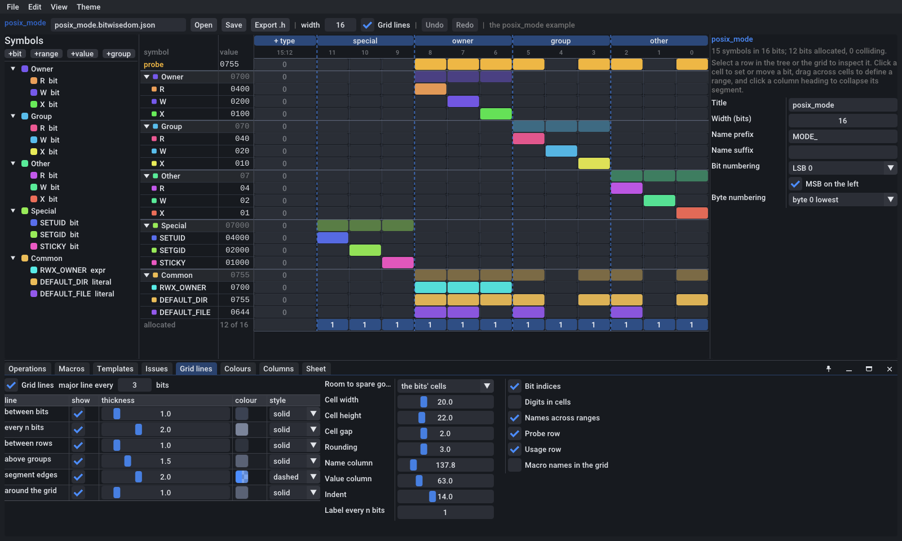
Column segments name runs of columns: the sheet's own (Columns tab, or over a selected range), and automatic ones by nibble, byte or half-word. Click a segment's heading to collapse it to one narrow column, which shows each row's bits there as hex, a dot, a count, or nothing. Clicking an automatic segment makes it one of the sheet's, collapsed.
Runs of bits no visible row uses can be abbreviated
to one .. column.
Names that do not fit their space are shortened, in
order: the row's short name, if it has one; its initials
(PARITY_EVEN is PE); as much of it as fits,
then ... The same applies to a range's name across its
cells and to segment headings.
View > Theme holds the window's two choices of colour, and they are the window's: kept in its settings file, not in the sheet, so every sheet opens in them.
Each row has a colour - its own, or one from the palette - and set bits are coloured by their row, their group, their kind, or the accent. A sheet's colours are automatic until it sets one in the Colours tab - a palette of its own, a saturation, an accent, a grid line's colour - and what it sets it keeps, in either theme and every scheme. Use the scheme's colours (the Colours tab, or View > Theme) gives them all back.
Text reads whatever the colour. A cell's digit, a range's name across its cells, a band's name, a selected row's name are drawn in the theme's text where that reads on what lies beneath - at WCAG's 4.5:1 - and in black or white where it does not, so a black range in the light theme has white digits and a yellow one in the dark theme dark ones. A row with No fill has no colour to read in: its set bits are drawn plain, in the theme's text, faintly - but a range's, all set, which its name across its cells already says - and that name sits on the row's own ground, which hides the digits beneath it, and is the theme's text; its swatch in the tree and the grid is left empty; and the curves the operations' preview draws for its bits are the text's, faded. Where a row's name is written in the row's colour - the inspector's title, the generated header in the Macros tab - a colour too near the panel's own is moved toward the text's until it reads at 3:1, and a row with no fill has its name in the text's colour.
Renaming happens where the name is: double-click a
name in the tree or the grid, press F2 - in the grid,
it renames the cursor's row - or choose Rename from the
row's menu, and type over it. Enter renames; Escape, or a click
elsewhere with nothing typed, gives up. The inspector's name field
renames as well, once its edit is done. Whatever named the row follows
it - an expression's names, a macro's body where it names the macro, a
macro's {NAME} placeholders - found with djinterp's lexer,
so a string, a comment or a macro's parameter that only shares the
spelling is left alone. A rename is one step of undo. A name that would
not be a C identifier once the affixes are added, or that is another
symbol's, is refused, and the status line says why. A segment is renamed
the same way, by a double-click on its heading or from its menu.
The symbols column lists its rows by symbol name,
name or value, as the three small buttons over it choose - above its
symbol label, in the strip the segments' bands run along,
the choice lit in the accent. By symbol name each row
is the macro the header defines, UART_CR_PARITY_NONE; by
name, its own name, PARITY_NONE, as the
symbols tree has it; by value, its value as the value
column writes it, in the monospace font, where its name would be.
Press value again and the values are written another
way at each press, every row alike and lined up at the
column's right, so their digits stand in columns: in hex, to the sheet's
width; in decimal; in binary, from the nibble that holds the highest set
bit; as a shifted run, 0x3 << 4, the way the header
writes a mask - a value in a field as the number the field holds,
0x2 << 4; as the bits it sets, bits 5:4,
by the sheet's numbering - and then round again. The button says which
(hex, dec, bin,
shift, bits), and presses one after another
are one step of undo. A sheet wider than an integer passes over decimal
and binary. Right-click any of the buttons for the
whole list, to pick one way straight off. By value, a symbol with no
value - a function-like macro, or a row in error - keeps its name,
faded, and a group, which is no symbol, its own name. The choice is the
sheet's: saved with it, and on View > Columns > Symbols
by too, and on the Grid lines tab. A narrower column has
shorter buttons - symbol, name,
value, then S, N, V
- and a double-click on its edge fits it to what it lists; a value lined
up in a column too narrow for it keeps its low digits. Macro
names in the grid, on the View menu, is the same choice between
symbol names and names, and also says how a range's name is written
across its cells, by value too.
Right-click opens a menu for what is under the mouse: a row, in the tree or the grid (rename, copy as code, paste code after it or into it, add, duplicate, delete, move, put its value in the probe, show its issues, what it shows, the sort); a segment's heading (rename, collapse or expand, remove, what its bits show); a button over the symbols column (every way to list the rows, the sort); the symbols column's heading (the sort, what the column lists, which columns are shown); or the sheet (add, paste code, copy the whole sheet as code, the sort, what the whole grid shows).
Columns resize by their edges, which light up under the mouse. Drag the edge after the name or value column, or double-click it to fit the column to its text; drag any boundary in the ruler of bit numbers to widen or narrow every bit's cell at once, or double-click one to put the cells back. A sheet just imported has its name column fitted to its names. The grid's widths are the sheet's, and are saved with it.
The grid fills its panel. The width it has beyond what its columns need goes to the bits' cells, widened alike, so a 32-bit sheet in a wide window has wide cells and no empty space beside them; the cells' width is then the least they take, and a sheet too wide for the window scrolls. With proportional cells the rows deepen as the cells widen, and a narrow sheet in a wide window stops at the widest cell. The Grid lines tab's Room to spare goes to gives it to the name column instead, or to nothing - and then the rows end where the columns do.
Under a resting mouse, what is squished, hidden or
abbreviated says what it is: a name in the grid gives its full macro
name, what it is and its brief; a value, itself in hex, decimal, signed
and binary; a band, its bits and what a click does; the ruler, the bit
or the run of bits below it; a collapsed or abbreviated column, the bits
it holds; a button over the symbols column, what it lists the rows by.
Anywhere in the window, a label cut off by its column ends in
... and shows itself whole, as does a value longer than its
field, a combo's choice, a check box's or a tree row's name past the
panel's edge.
The columns of every table - the inspector's, the issues', an
operation's - resize by their edges too, and the window remembers their
widths, the layout of its windows, the theme and the colour scheme, and
the user's own preferences from one run to the next, in a settings file
of the user's: %APPDATA%\bitwisedom\bitwisedom.ini on
Windows, and $XDG_CONFIG_HOME/bitwisedom/bitwisedom.ini (by
default ~/.config/bitwisedom/) elsewhere; its session,
session.json, is beside it.
Select rows (a group stands for every symbol in it), pick an operation and an operand, and the Operations page previews it:
Shift left and right, arithmetic shift, rotate left and right,
complement, and, or, xor, and-not, add, subtract, multiply, negate, swap
bytes, reverse bits, and set, clear or toggle one bit.
Apply keeps each definition's kind where the result
fits it: a shifted bit is still a bit, a range moved without wrapping is
still a range, a value moved within its field is still a value, and an
expression is wrapped in the operation
((EN | TXEN) << 1) - unless its operands moved with
it, when it is left as written. Otherwise the symbol becomes a literal
of its new bits. Every applied operation can be undone.
The Macros page shows the header as it will be written, coloured with the grid's colours, and writes it beside the sheet file (Export, Ctrl+E) or to the clipboard (Copy).
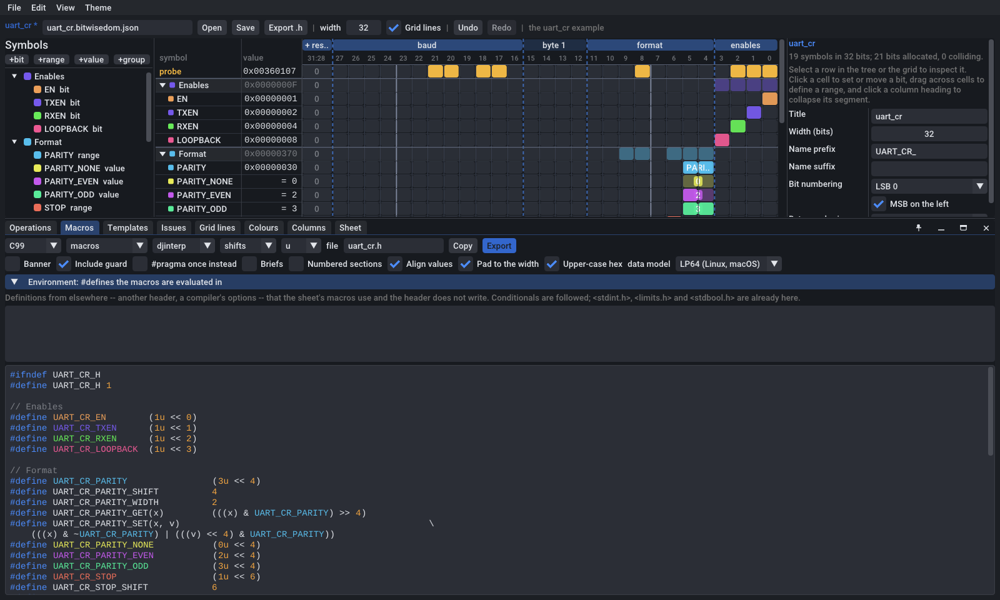
ull needs a long long; what a level
cannot honour is replaced by the nearest it can, and a note says
so.inline constexpr from C++17, constexpr from
C++11, const before), optionally in a namespace.Templates are macros written beside every symbol of
the kinds they apply to. The defaults give every range
_SHIFT, _WIDTH, _GET(x) and
_SET(x, v); _BIT, _IS_SET(x) and
_IS(x) are there to switch on. Add your own on the
Templates page, with these placeholders in the name, the parameters and
the body:
| placeholder | is |
|---|---|
{NAME} |
the symbol's macro name |
{LOCAL} |
its own name |
{VALUE} |
its value, as a literal |
{MASK} |
its mask (a value's: its field's macro name) |
{SHIFT}, {WIDTH}, {BIT} |
its lowest bit, its width, its bit |
{PREFIX}, {SUFFIX} |
the affixes its name took |
A wide sheet's templates have more:
| placeholder | is |
|---|---|
{WORD}, {WORD_SHIFT},
{WORD_MASK} |
the word a bit or range begins in, where in it, and its bits there |
{WORD_BITS} |
a word's width |
{FIELD} |
a value's range's macro name |
{GET}, {PUT} |
the range read from an array named a, and
v written into it |
{BITSET} |
the prefix of the array macros |
No parameters makes an object-like macro. A macro
row is the same thing for one macro: parameters and a body,
with {NAME} for any symbol's macro name - and, with no
parameters, function-like to write NAME(). A body
over several lines is written in the style guide's layout: a backslash
at column 80 on every line but the last, and parameters that do not fit
one line one to a line, aligned under the first. A literal can be given
a least number of digits, so 0x0A00 stays four.
Symbols in error stay out of the header, and the notes say which.
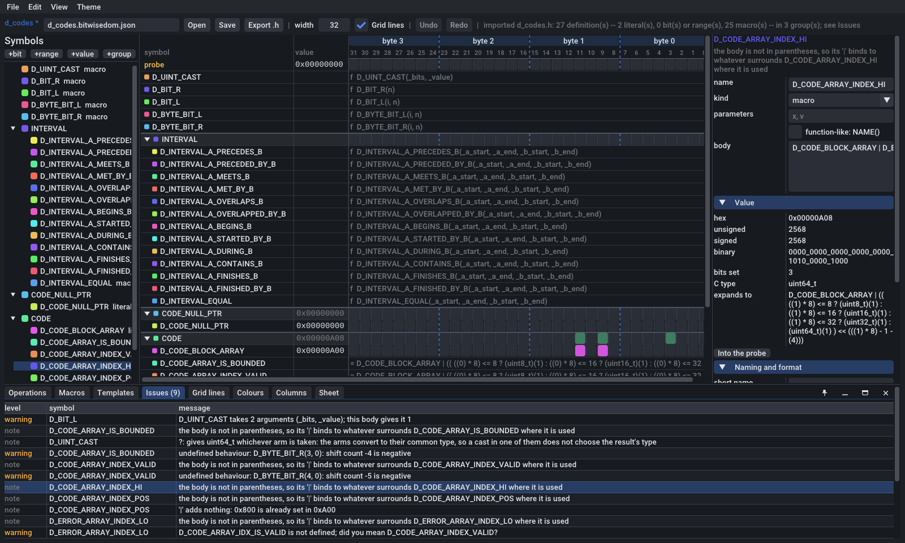
File > Open sheet, bitfield or header opens a
sheet, or reads a header or a source - anything that is not JSON - into
a new one, saved beside it under its name; JSON is read as the JSON section says. A file dropped on the
window is opened the same way. File > New sheet from
the clipboard makes a sheet of what was copied, code or JSON,
and Paste code (Ctrl+Shift+V, or a row's menu) merges
it into the open sheet: after the selected row, or into a selected
group. A name the sheet already has takes the pasted definition. A
pasted name keeps the macro name it had: where it lands, the affixes it
would take are taken off its own name - UART_CR_EXTRA
pasted into uart_cr is the row EXTRA - and one
without them is noted, since it will take them.
Code is read as a preprocessor reads it - by djinterp's lexer, at the sheet's language and level, its conditionals followed - and each #define in a branch taken becomes a row:
| written | becomes |
|---|---|
0x0A00, 42u, (-3) |
a literal |
(1u << 3) |
a bit |
(0xFu << 4) |
a range |
anything else: D_A | D_BIT(3), F(x) |
a macro, verbatim |
-- but a literal, a bit or a range only when the header would write
it back exactly as it was written, digits, case and suffix and all;
anything else stays a macro, written as it was, its lines and their
indentation kept. The comment above a definition becomes its note. A
rule of = begins a group, titled by the heading under it,
or else named for what its symbols' names share. An include guard, or
#pragma once, becomes the generator's setting. What was
left out - declarations, code - the Issues page lists.
Copy as code (Ctrl+Shift+C, or a row's menu) puts the selected rows on the clipboard as their #defines, without the header's banner, contents and guard: ready to paste into a file of one's own. Export writes the whole header.
A macro row has the value its name has in C. The name is expanded as
the preprocessor expands it - hide sets, # and
##, __VA_ARGS__ and __VA_OPT__ -
in an environment of definitions: the standard headers'
(<stdint.h>, <limits.h>,
<stdbool.h>), the sheet's own
environment (on the Macros page: #defines from
elsewhere - another header, a compiler's -D options - that
the sheet's macros use and its header does not write), and every row of
the sheet. What it expands to is then evaluated with C's types: each
literal's own, casts and the fixed-width typedefs, the integer
promotions and the usual arithmetic conversions, at the sheet's language
level and data model (LP64 for Linux and macOS, LLP64
for Windows, ILP32). The inspector shows a macro's value, its C type,
and what it expands to; in the grid, an object-like macro with a value
is drawn as any value is, and one with no bits - one that takes
arguments, or has no value - has its cells drawn empty, the grid's lines
through them, and its definition as the header writes it over them,
centred, in the monospace font:
UART_CR_IS_ENABLED(x) (((x) & UART_CR_EN) != 0). A row
in error says why the same way, in the collision colour.
What C would get wrong is reported. Undefined behaviour - a negative
or too-wide shift, signed overflow, division by zero - is a warning,
traced through the macros it came out of
(D_BYTE_BIT_R(3, 0): shift count -4 is negative), and
leaves the macro no value; implementation-defined behaviour is a note.
So are a macro called with the wrong number of arguments; a name nothing
defines, with the one meant when one is near
(did you mean D_CODE_ARRAY_INDEX_VALID?); an |
that adds no bit; a ?: whose arms convert to their common
type, so that a cast in one arm does not choose the result's type; and a
body that is not in parentheses.
The Issues page lists everything the sheet's check found, by row: names that are not C identifiers, reserved names, names defined twice, bits outside the width, numbers an encoding cannot hold, unknown names and cycles in expressions, overlaps in exclusive groups, and what the define environment found in the macros (above). What the last import or paste had to say is listed after them. Click a symbol to select it; right-click it for its menu.
A sheet is saved as JSON (*.bitwisedom.json): its
fields, its rows as a tree, its segments, and its grid, colour and
generator settings, so it opens looking as it was left. Enumerations are
words and colours #RRGGBBAA; values, of any width, are
0x-prefixed strings, which no JSON reader rounds. A missing key keeps
its default, so older files open; a newer version is refused with the
reason. A colour the sheet leaves automatic is not written; a file from
before the theme was the window's wrote every colour, and reads with its
defaults automatic again and its own choices kept.
The examples are in
res/djinterp/tools/bitwisedom/examples/, and on the File
menu; the two large ones are bitfields, in
res/djinterp/tools/bitwisedom/examples/large.
A sheet file is the window's own. For other programs - a script that
makes bitfields from a datasheet, a generator for another language, a
review of what changed - there are two more shapes of JSON, both read
wherever a sheet is (File > Open, a drop, the clipboard,
bitwisedom-gen):
A bitfield (*.bitfield.json, File
> Export the bitfield as JSON, or Copy the bitfield as JSON) is the
bitfield alone, as a person would write it - its width, its affixes, and
its rows, each in as few keys as say what it is:
{ "title": "dev", "width": 16, "prefix": "D_", "rows": [
{ "name": "EN", "bit": 0, "note": "on" },
{ "name": "MODE", "bits": "4..6", "values": { "SLOW": 1, "FAST": 2 } },
{ "name": "ALL", "expr": "EN | MODE" } ] }A key a row does not have is passed over and noted with where it was;
a row that says two things, or nothing, is refused with its path -
rows[1] (MODE): two definitions, "bit" and "bits": a row has one.
Written from a sheet and read back, it writes the same header.
An export (*.export.json, File >
Export everything as JSON, Ctrl+Shift+E) is everything: the sheet whole,
the layout, every row as it resolves - its macro name, its bits, its
value in hex, the integer C knows it by, its error - the issues, and the
header's text. Read back, it is the sheet it holds.
All three are written a row to a line where the row fits in a hundred
columns, so a bitfield of a thousand rows is about a thousand lines, and
a diff of two shows which rows changed;
scripts/bitwisedom/bitfield_json.py lays out JSON the same way, for a
script that writes bitfields. json.html describes
both key by key, and bitfield.schema.json is a JSON Schema of
the bitfield for an editor that checks JSON as it is typed. The two
large examples, in
res/djinterp/tools/bitwisedom/examples/large, are bitfields
made by scripts - one of 1,424 rows, one of 320 bits - to read as
examples of the shape.
File > Examples holds twenty-one sheets, on shelves, each with its size beside it. They vary in width (one byte to sixty-four, and past it), in density (every bit named, or a few scattered through the word), in length (a dozen rows to fourteen hundred), and in sign: some fields are unsigned, some two's complement or offset binary, and some values negative.
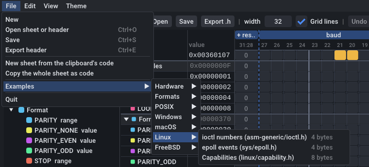
| shelf | example | bits | what it shows |
|---|---|---|---|
| Hardware | uart_cr |
32 | a peripheral's control register: enables, ranges and their named values |
usb_request_type |
8 | one byte, every bit in a field: a USB request's direction, type and recipient, and the standard requests | |
lm75_temperature |
16 | a signed field: nine bits of two's complement at the top of the word, -55 C to +125 C in half degrees | |
x86_eflags |
32 | a sparse word: flags around a two-bit privilege level, a bit that always reads as one, ten reserved bits collapsed | |
x86_64_pte |
64 | every bit named: flags at both ends, a 40-bit frame number collapsed to one column, protection keys and NX | |
pci_config_header |
512 | wider than any integer: a PCI function's configuration header,
sixteen registers, its header's arrays checked against
linux/pci_regs.h |
|
| Formats | rv32i_itype |
32 | an instruction: opcode, registers and a 12-bit two's complement immediate |
ieee754_single |
32 | a float: the exponent in offset binary (bias 127), and 1, pi,
FLT_MAX, the infinities and a NaN, bit for bit |
|
rgb565 |
16 | a dense pixel: three channels, every level and colour drawn in the colour it is | |
| POSIX | posix_mode |
16 | a file's permission bits, its setuid, setgid and sticky bits, and the usual modes |
| Windows | win32_hresult |
32 | severity, flags, facility and code, the codes built from them as
winerror.h builds them |
win32_window_style |
32 | the high half all styles, two of them under two names, and the combinations | |
| macOS | macos_macho_flags |
32 | a dense word of flags: 29 of a Mach-O header's 32 bits |
macos_cpu_type |
32 | a signed int: the ABI's bits over the family, and
CPU_TYPE_ANY as -1 |
|
| Linux | linux_ioctl |
32 | an ioctl number's four fields, the _IO family as
macros, commands old and new |
linux_epoll_events |
32 | sparse: events in the low bits, modes in the top four, nothing between | |
linux_capabilities |
64 | 41 capabilities in eight bytes, each with its number as a
_BIT macro |
|
| FreeBSD | freebsd_file_flags |
32 | the owner's half and the superuser's half of a file's flags |
freebsd_kevent |
16 | a short's negative filters, -1 to -15, beside the
flags' unsigned bits |
|
| Large | win32_hresults |
32 | every HRESULT winerror.h defines: 1,376 codes, a closed
group for each of 22 facilities, under the fields that make them - every
facility a value of the facility field, the DirectX ones with the X bit
beside it |
x86_cpuid |
320 | ten of CPUID's feature registers end to end: 212 flags, the MPX address-width adjust as a field among them, and x86-64-v1 to v4 as sets of them; the probe is a v3 processor, and the grid reads from bit 0, the registers in the order of the rows |
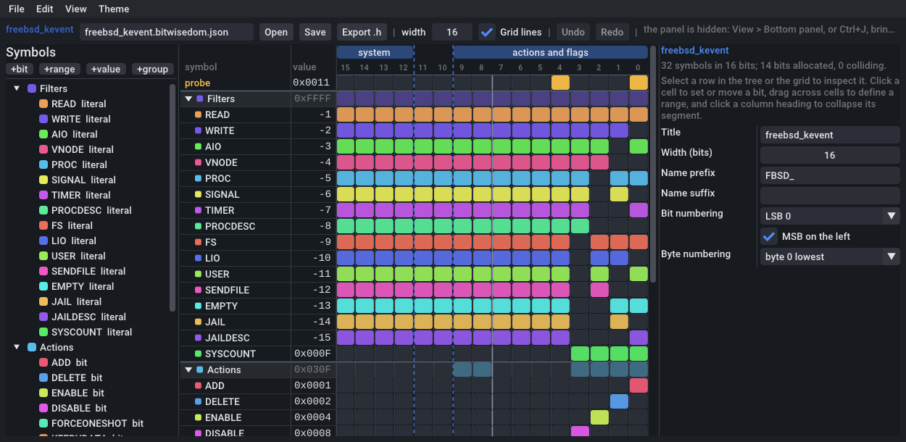
The two on the Large shelf are bitfields, in
res/djinterp/tools/bitwisedom/examples/large, which the
build embeds, and which scripts in tools/ made:
winerror_to_bitfield.py reads MinGW-w64's
winerror.h (public domain) for every HRESULT, and
x86_cpuid_bitfield.py writes CPUID's flags from its own
table, after the Intel SDM and AMD's APM. A closed group's row shows the
union of its codes, so each facility's bits read at a glance before it
is opened.
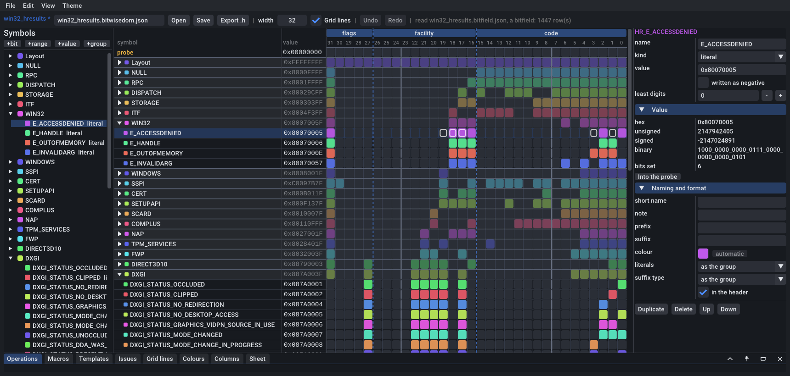
The platform examples are checked against the platform: where the
build targets Windows, macOS, Linux or FreeBSD, each of that platform's
examples is generated and compiled beside the system's own headers, and
each value the system also defines is compared at compile time
(tests/platform/) - on Windows, all 1,376 HRESULTs and
their facilities among them. Where GCC or Clang targets x86,
x86_cpuid's flags are compared with
<cpuid.h>'s masks, under every name either compiler
gives them; Clang's bit_PKU is passed over, since Clang's
header has had it at bit 2, UMIP's. At C++98, which has no
long long, the 64-bit examples' constants are
unsigned longs, which hold them only where
long has 64 bits; the generator says so, on the Macros page
and from bitwisedom-gen, and the C++98 header tests skip
them on Windows and 32-bit targets.
bitwisedom COMMAND ... reads, writes and changes sheets
without the window. It is made with djinterp's command-line kit, so its
options, its help, its diagnostics and its exit statuses are every
djinterp program's (docs/djinterp/tools/cli/GRAMMAR.html,
whose section 10 is bitwisedom's). bitwisedom --help lists
the commands, and bitwisedom COMMAND --help each one's
options:
| commands | do |
|---|---|
gen, check, show,
decode, eval, convert,
examples |
read a sheet: write its header, report its issues, list its rows, say what values hold, evaluate C expressions over it, write it in another shape; list the examples |
new, import, add,
change, duplicate, remove,
rename, move, sort,
set, get, op |
make or change one, written whole or not at all; a change that would
give the sheet an error it did not have is refused unless forced
(-f) |
gui |
open the window on the sheets named, or where it was left |
A SHEET is any of the three shapes of JSON - a sheet file, a bitfield
or an export - example:NAME for a built-in example, or
- for standard input. set and get
take a setting by the name the window's Options show,
gen.level, and anything else a sheet file holds by its path
in the file, probe or rows.0.name: read as the
file has it, and written as the member there is, refused where the sheet
would not keep the value. --keys=names or
--keys=paths takes the one alone; without it, the setting
bitwisedom.keys chooses, and the build's
D_CFG_BITWISEDOM_KEYS is that setting's default. A command
exits 0 when it did what was asked, 1 when the answer it was asked for
is no, and 2 for trouble: the command line, a file, or the program.
The window is a module of its own, bitwisedom-gui, which
bitwisedom gui loads only when it is asked for: the program
carries no window system, no GPU code and no fonts, and a system with no
display can install it alone (BUILD.html builds the two
apart). bitwisedom gui hands the window every SHEET it is
given - any file the window opens, a header to import among them - and
says on standard error, as the window starts, each it cannot open, as
the commands would say it; the window opens on the rest, and the run
ends with 2 when it closes, so that a script still learns of a typo.
--sheets=refuse refuses such a SHEET before any window
opens instead (without it, the setting bitwisedom.sheets
chooses, its default the build's
D_CFG_BITWISEDOM_GUI_SHEETS), and
bitwisedom gui --help lists the window's own options.
The two settings are a djin of bitwisedom's own,
bitwisedom, kept as every djinterp program keeps its
settings: in the user's settings file
($XDG_CONFIG_HOME/djinterp/settings, shared by every
djinterp program), in the environment and on the command line, each
above the one before:
[bitwisedom]
bitwisedom.keys = pathsBITWISEDOM_BITWISEDOM_SHEETS=refuse bitwisedom gui sheet.json
bitwisedom --bitwisedom.keys=names get sheet.json gen.levelThe file's [bitwisedom] section is bitwisedom's alone;
every other program passes over it, and reads a bitwisedom.
line outside it as one for a djin it does not register, saying nothing
of it.
bitwisedom-gen is the generator's command line from
before, kept so that build scripts written for it run unchanged:
bitwisedom gen's work, under the options it always
took.
bitwisedom-gen <sheet.json | --example NAME> [options]
-o, --out FILE write the header to FILE (default: stdout)
--self-test FILE write a compile-time self-test of the header
--bitfield FILE write the sheet as a bitfield (JSON)
--export FILE write everything about it (JSON)
--lang c|cpp --form macros|constants
--level c99|c11|c17|c23|cpp98|cpp11|cpp14|cpp17|cpp20|cpp23
--style djinterp|plain
--word 8|16|32|64 a wide sheet's array words, in bits
--date YYYY.MM.DD the banner's date (default: today's)
--check report the sheet's issues; write nothing
bitwisedom-gen --save-example NAME FILE
bitwisedom-gen --list-examplesThe sheet may be any of the three shapes of JSON - a sheet file, a
bitfield or an export - so a bitfield written by a script goes straight
to a header. Asked for --bitfield or --export
and not for -o, it writes no header to stdout. It exits 0
when it did what it was asked, 1 when the sheet has errors (the header
is still written, without them), and 2 for a usage or file problem. The
self-test is a C or C++ file that includes the header and does not
compile unless every macro has the value the sheet gives it, and every
range's _GET and _SET agree with its named
values. A wide sheet's arrays are not constants C can check as it
compiles, so its self-test checks them as it runs: every array against
the words the sheet gives it, every bit set, tested and cleared through
the array macros, and every field written and read back, alone and among
bits all set. It returns 0 only if each check holds, and names any that
does not.
| key | does |
|---|---|
| Ctrl+Z, Ctrl+Y (or Ctrl+Shift+Z) | undo, redo |
| Ctrl+N, Ctrl+W | a new sheet, close the sheet in front |
| Ctrl+O, Ctrl+S, Ctrl+E | open, save, export the header |
| Ctrl+Shift+E | export everything as JSON |
| Ctrl+B, Ctrl+G | add a bit, add a group |
| Ctrl+Shift+A | the Add node window, for the selected row's group |
| Ctrl+D, Del | duplicate, delete the selected rows |
| Alt+Up, Alt+Down | move the selected row |
| F2 | rename the selected row - in the grid, the cursor's, in place |
| Ctrl+Shift+C, Ctrl+Shift+V | copy the selection as code, paste code |
| Ctrl+J | put the windows below the sheets away, and bring them back |
| Ctrl+=, Ctrl+-, Ctrl+0 | zoom the window in front in, out, to its actual size |
| Ctrl+Alt+Right, Ctrl+Alt+Left | the next workspace, the last |
| Ctrl+, | the Options |
| Ctrl+Shift+Plus, Ctrl+Shift+Minus (or Ctrl with the keypad's + and -) | expand every group, collapse every group |
| G | grid lines on and off |
| in the grid, as Excel's | does |
|---|---|
| arrows; Shift+arrow | move the cursor a cell; extend the range |
| Ctrl+arrow; Ctrl+Shift+arrow | to the edge of the bits set, the next one, or the end; extend there |
| Home, Shift+Home | the row's first bit, past the frozen symbols and value columns; extend there |
| Ctrl+Home, Ctrl+End (with Shift, extend) | the first row's first bit; the last cell anything is in |
| End | End mode: then an arrow goes as with Ctrl, Home as Ctrl+End, Enter to the row's last cell with anything |
| Page Up, Page Down (with Shift, extend) | a screen of rows |
| Alt+Page Up, Alt+Page Down | a screen of columns |
| Ctrl+Page Up, Ctrl+Page Down | the sheet before, after |
| Enter, Shift+Enter; Tab, Shift+Tab | down, up; right, left - round a range; after Tabs, Enter goes back to their first column |
| Shift+Space, Ctrl+Space, Ctrl+A | select the range's rows, its columns, everything |
| Shift+Backspace, Ctrl+Backspace | the cursor's cell alone; scroll back to it |
| Ctrl+. | the cursor to the range's next corner |
| F8, Esc | Extend mode on and off; Esc ends End mode too |
| Space | flip the cursor's bit |
| with the mouse | does |
|---|---|
| double-click a name | renames it, in the tree or the grid |
| double-click a segment's heading | renames the segment |
| double-click a sheet's tab | renames its file |
| right-click a tab | its menu: close it, the others, those to its left or right; pin it |
| drag a probe or usage row by its name | places it among the rows, or pins it |
| click the status bar's message | the console: every action so far |
| right-click | the menu for the row, segment, heading or sheet under the mouse |
| drag, double-click a column's edge | resizes the column, fits it to its text |
| drag, double-click a ruler boundary | sizes every bit's cell, puts them back |
| Shift+drag across cells | selects a block of rows and bits |
| drag a tab | docks its window elsewhere, or floats it |
| Ctrl+wheel | zooms the window under the mouse |
| drop a file | opens it: a sheet, or a header read as code |
Edits that arrive as a stream - a drag, typing - undo as one step.